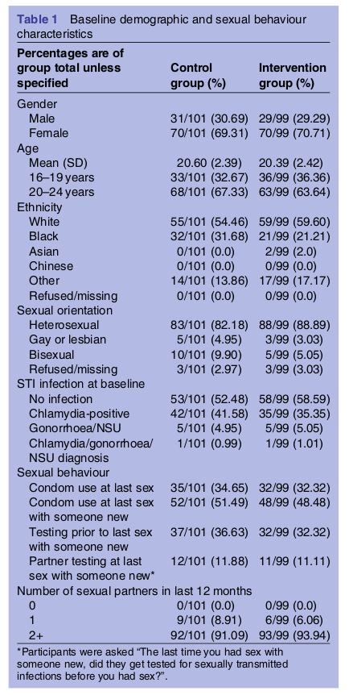

|

../../cm-ucl/corpus-oa-pmr-v02/10.1136_bmjopen-2016-013045/tables/table1/table.png
|
| Percentages are of group total unless specified |
Control group (%) |
Intervention group (%) |
| Gender |
|
|
| Male |
31/101 (30.69) |
29/99 (29.29) |
| Female |
70/101 (69.31) |
70/99 (70.71) |
| Age |
|
|
| Mean (SD) |
20.60 (2.39) |
20.39 (2.42) |
| 16–19 years |
33/101 (32.67) |
36/99 (36.36) |
| 20–24 years |
68/101 (67.33) |
63/99 (63.64) |
| Ethnicity |
|
|
| White |
55/101 (54.46) |
59/99 (59.60) |
| Black |
32/101 (31.68) |
21/99 (21.21) |
| Asian |
0/101 (0.0) |
2/99 (2.0) |
| Chinese |
0/101 (0.0) |
0/99 (0.0) |
| Other |
14/101 (13.86) |
17/99 (17.17) |
| Refused/missing |
0/101 (0.0) |
0/99 (0.0) |
| Sexual orientation |
|
|
| Heterosexual |
83/101 (82.18) |
88/99 (88.89) |
| Gay or lesbian |
5/101 (4.95) |
3/99 (3.03) |
| Bisexual |
10/101 (9.90) |
5/99 (5.05) |
| Refused/missing |
3/101 (2.97) |
3/99 (3.03) |
| STI infection at baseline |
|
|
| No infection |
53/101 (52.48) |
58/99 (58.59) |
| Chlamydia-positive |
42/101 (41.58) |
35/99 (35.35) |
| Gonorrhoea/NSU |
5/101 (4.95) |
5/99 (5.05) |
| Chlamydia/gonorrhoea/ |
1/101 (0.99) |
1/99 (1.01) |
| NSU diagnosis |
|
|
| Sexual behaviour |
|
|
| Condom use at last sex |
35/101 (34.65) |
32/99 (32.32) |
| Condom use at last sex |
52/101 (51.49) |
48/99 (48.48) |
| with someone new |
|
|
| Testing prior to last sex |
37/101 (36.63) |
32/99 (32.32) |
| with someone new |
|
|
| Partner testing at last |
12/101 (11.88) |
11/99 (11.11) |
| sex with someone new* |
|
|
| Number of sexual partners in last 12 months |
|
|
| 0 |
|
|
| 0/101 (0.0) |
|
0/99 (0.0) |
| 1 |
|
|
| 9/101 (8.91) |
|
6/99 (6.06) |
| 2+ |
|
|
| 92/101 (91.09) |
|
93/99 (93.94) |
../../cm-ucl/corpus-oa-pmr-v02/10.1136_bmjopen-2016-013045/tables/table1/table.svg.html
|

../../cm-ucl/corpus-oa-pmr-v02/10.1136_bmjopen-2016-013045/tables/table2/table.png
|
| Follow-up |
Control group n/N (%) |
Intervention group n/N (%) |
Follow-up n/N (%, 95% CI) |
| 12-month follow-up for cumulative incidence |
82/101 (81.19) |
80/99 (80.81) |
162/200 (81.0, 74.86 to 86.19) |
| of chlamydia (trial test kits+clinic data) |
|
|
|
| 12-month follow-up for trial test kits |
80/101 (79.21) |
80/99 (80.81) |
160/200 (80.0, 73.78 to 85.31) |
../../cm-ucl/corpus-oa-pmr-v02/10.1136_bmjopen-2016-013045/tables/table2/table.svg.html
|

../../cm-ucl/corpus-oa-pmr-v02/10.1136_bmjopen-2016-013045/tables/table3/table.png
|
| Month 1 n/N (%) |
Month 12 n/N (%) |
| Number of text messages read |
|
| All |
|
| 73/89 (82.02) |
57/77 (74.03) |
| Some |
|
| 10/89 (11.24) |
18/77 (23.38) |
| None |
|
| 6/89 (6.74) |
2/77 (2.60) |
| If anyone read messages |
|
| 24/92 (26.09) |
19/80 (23.75) |
| sent to the participant |
|
| If yes, how the participant felt about this |
|
| Happy |
|
| 7/24 (29.17) |
8/19 (42.11) |
| Unhappy |
|
| 2/24 (8.33) |
2/19 (10.53) |
| OK |
|
| 15/24 (62.50) |
9/19 (47.37) |
../../cm-ucl/corpus-oa-pmr-v02/10.1136_bmjopen-2016-013045/tables/table3/table.svg.html
|

../../cm-ucl/corpus-oa-pmr-v02/10.1136_bmjopen-2016-013045/tables/table4/table.png
|
|
Agree n/N (%) |
Unsure n/N (%) |
Disagree n/N (%) |
| The text messages made me take action |
32/85 (37.65) |
32/85 (37.65) |
21/85 (24.71) |
| The text messages made me think |
71/86 (82.56) |
7/86 (8.14) |
8/86 (9.30) |
| The text messages were from someone I could trust |
57/86 (66.28) |
21/86 (24.42) |
8/86 (9.30) |
| The text messages were respectful |
76/86 (88.37) |
8/86 (9.30) |
2/86 (2.33) |
| The text messages talked down to me |
11/85 (12.94) |
15/85 (17.65) |
59/85 (69.41) |
| The text messages were easy to understand |
81/85 (95.29) |
3/85 (3.53) |
1/85 (1.18) |
| There were too few text messages each day |
17/85 (20.0) |
18/85 (21.18) |
50/85 (58.82) |
| There were too many text messages each day |
20/85 (23.53) |
17/85 (20.0) |
48/85 (56.47) |
| I would have liked the text messages to stop sooner |
12/86 (13.95) |
25/86 (29.07) |
49/86 (56.98) |
| The text messages came at the right time of day |
56/86 (65.12) |
21/86 (24.42) |
9/86 (10.47) |
../../cm-ucl/corpus-oa-pmr-v02/10.1136_bmjopen-2016-013045/tables/table4/table.svg.html
|